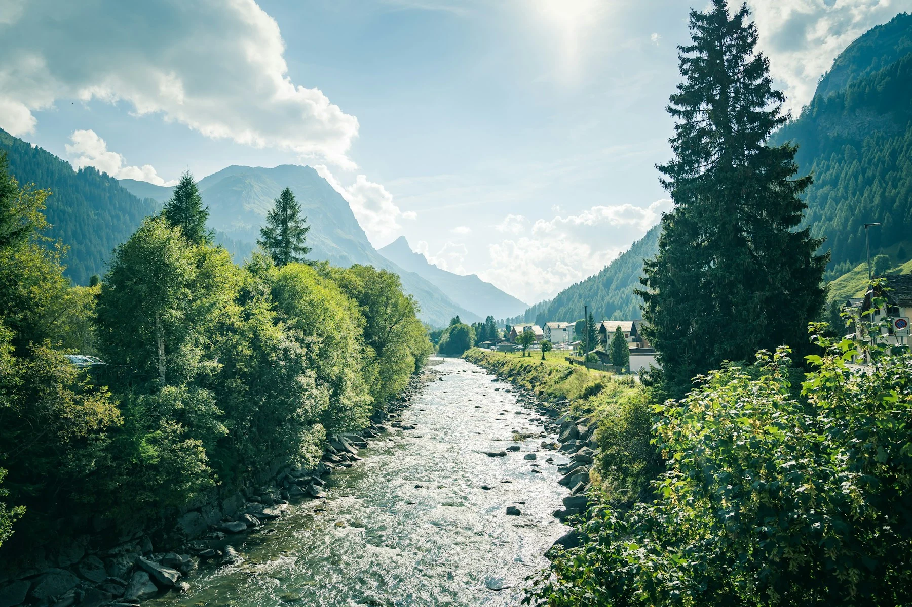
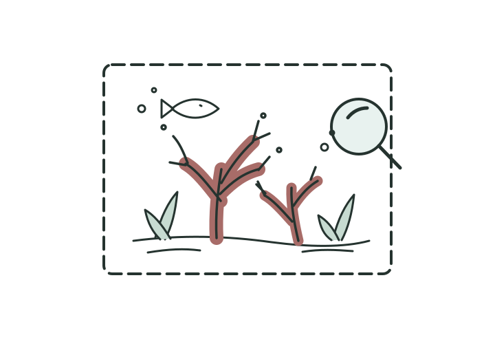
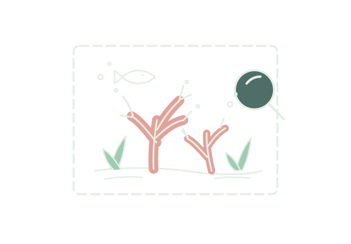

Technology has an impact beyond the screen
I love technology for what it makes possible. It helps businesses work better, helps people solve problems, connects us to information, and can open up entirely new possibilities.
But technology doesn’t exist in a vacuum.
The software we build depends on physical infrastructure, energy, water, hardware, and data. As technology, cloud computing, and AI continue to grow, I think it is worth asking not only what can we build, but also what does it take to build and run it?
This is something I care about personally, and I try to contribute in small ways by volunteering with initiatives that make technology more sustainable or use technology to help address environmental challenges.


Digital sustainability
I once spent several hours in a volunteer session focused on reducing unnecessary digital data, including cleaning up old emails and files in cloud storage.
What started as a volunteer activity became a habit I’ve continued since. It made me more conscious of the fact that our digital lives still rely on physical infrastructure and resources.
Sometimes sustainability can start with simply being more intentional about what we create, store, and keep.


AI for coral research
I volunteered with Zooniverse’s Click-a-Coral, helping identify and classify coral in underwater imagery.
The project uses volunteer classifications as training data for AI models that can help researchers identify coral in large volumes of underwater video. The work supports efforts to better understand and restore deep-sea coral habitats in the Gulf.
I loved the idea that something as simple as spending time labeling images could contribute to scientific research and help technology do something useful for the natural world.
Climate education
I’ve also volunteered through a Climate Change Community of Practice, including a World Environment Day activity where we created climate-action kits designed to help children learn about and take action for the environment.
I like initiatives like this because technology and sustainability are not only about infrastructure and engineering. They’re also about helping people understand problems and giving them ways to participate in solving them.
Why this matters to me
I don’t think every piece of technology needs to solve a climate problem.
But I do think sustainability should be part of the conversation when we design and build technology. That means thinking about what we create, what we consume, what we make easier, and what consequences might exist beyond the interface.
This is also where I find Don Norman’s idea of Humanity-Centered Design interesting: expanding our lens beyond the immediate user to consider the broader ecosystem of people, all living things, and the physical environment, while thinking about the longer-term effects of what we design.
For me, being thoughtful about technology means thinking about both people and the planet.